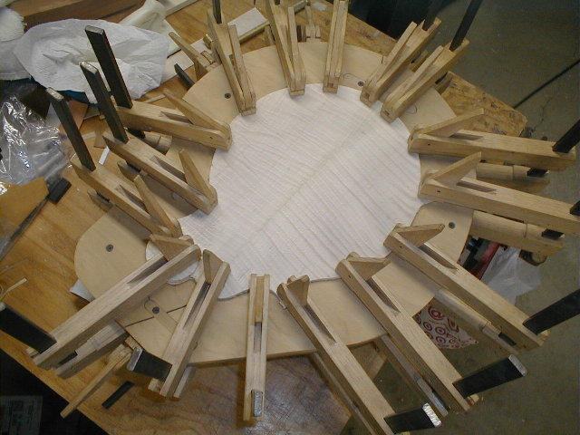

←
12345678910111213
→
Virzi fitting, scroll carving, binding.
- 46) Here's the Virzi! The feet are about 1/4" thick and the plate is 0.075" thick.
- 47) A view of the other side.
- 48) Here, the feet have been glued (hot hide glue) to the top. Virzi's set over toward the bass side because they the feet fit between the tone bars.
- 49) You can clearly see the feet and how they fit between the tone bars. I cut the feet just shy of the tone bars, so there is no direct contact between the two.
- 
- 50) Gluing the back on Chris' mandolin
- 51) Last look inside Chris' mandolin before the top is glued on.
- 52) The scroll is carved by hand. I've opened up the "strap holder" area with a small saw like cutter, a Dremel tool, and an Exacto knife.
- 53) Chisels, finger planes, gouges, and sandpaper are used to shape the scroll. I'm not attempting to get it perfect at this point as I'll do the final shaping after the binding ins in place.
- 54) Gary Hedrick's mandolin will be "reverse bound" like Monroe's. Here, I'm putting together the binding in a fixture I've made from Corian counter top material (glue doesn't stick real well to it). I put the ivoroid binding and a thin black/white strip together and apply a bead of acetone along the length. It bonds very quickly. After taking it out of the fixture, I let it sit overnight to dry and then scrape it flat.
- 55) Shaping the inside of the scroll with sandpaper attached to small curved pieces of metal (using double stick tape). Anyone got a better idea on how to sand the inside of the scroll. I'm open to suggestions!
←
12345678910111213
→
© Lynn Dudenbostel, 2002.